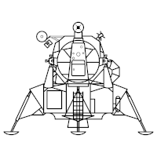
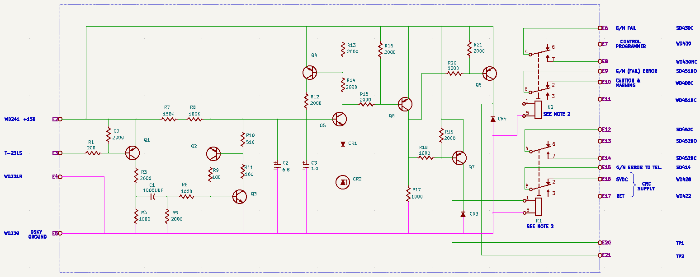
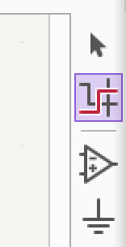

Contents
What's this Virtual Machine?
This Virtual Machine (VM), called VirtualAGC-VM64, is intended to
provide an easy and portable way to work with the materials from
the Virtual AGC Project, and to update it, without the
inconvenience of having to deal with complex installation
instructions or the quirks of the various computer platforms
(Windows, Mac OS, Linux, et al., in multiple
operating-system versions) that Virtual AGC targets. I won't
describe the Virtual AGC Project itself in any detail here, since
if you don't have a pretty good idea already what it is, then you
can be assured that you don't need this VM at all and can stop
reading right here. It suffices to say that the project
provides information, software (both original and modern), and
engineering drawings related to the flight computers used in the
Gemini, Apollo, and Space Shuttle spacecraft and launch vehicles.
With this VM you'll be able to run all of the software provided
by the Virtual AGC project, as well as to view Apollo guidance
system electrical schematics and to perform electrical simulations
of its digital circuity. For example, you could
simulate electrical operation of an Apollo Guidance Computer (AGC)
running its original software.
The VM itself is running a light-weight version of the 64-bit
Ubuntu Linux operating system that's known as Lubuntu.
The VM can be run on any computer for which there's a version of the
VirtualBox virtualization environment, or some common
alternatives to it, but you likely know that already since you're
viewing this message.
Note:
- Login is automatic to the Lubuntu
desktop.
- If at some point you need to know it, your
username and password are both "virtualagc". Changing
the password will defeat certain updates, so change it at
your peril.
- Your home directory is /home/virtualagc,
usually abbreviated as ~.
- The Virtual AGC source-code tree is
maintained in the subfolder
git/virtualagc/ under your home directory.
- The electrical-schematics tree is maintained
in the subfolder
git/virtualagc-schematics/ under your home directory.
- Your "installed" version of the built
Virtual AGC is in the subfolder
VirtualAGC/ under your home directory.
- In Linux, filenames and folder names are case
sensitive and "/" is the separator between the
components of a filesystem path.
Setup of VirtualBox
I doubt if most people using modern computers will need any setup
to use the Virtual AGC VM, beyond whatever you've already
done to be reading this pleasant little note. However, there
are some optional things you might want to do. If so, shut
down the VM, if it's running, and look at VirtualBox's settings
for the VirtualAGC-VM64 VM:
- As delivered, the VM is set up to use 4 CPU cores. This
can be changed in the VirtualBox Settings/System/Processor
window. I have run it with 1 CPU core without any apparent
difficulty, but this is nevertheless the case of "more is
better".
- Also as delivered, the VM is set to use 4GB of memory.
This can be changed in the VirtualBox
Settings/System/Motherboard window. I have run it with 1GB
without any apparent problem.
- If you want to use a USB joystick to simulate the Apollo LM
Attitude Controller Assembly (ACA, also referred to as the
rotational hand controller, or RHC), attach it to your computer
and look at the VirtualBox Settings/USB window. Use the
hot-buttons there to add a new "USB Device Filter", choosing
your joystick from the list you're presented with. Note
that while the VM is running, it will by default take control of
any of the devices listed in "USB Device Filters" away from your
host computer, and only return control after shutting down the
VM.
Warning: My own personal 3D
joystick seems to be misidentified by some software within the
VM as a tablet (i.e., a touchpad). So while it can be used
as a ACA/RHC, it may also just cause random stuff to occur on
the desktop as long as it's enabled. Which makes using it
less appealing for me. Whether that's the case on your
computer with your 3D joystick, who knows?
What's Not In this Virtual Machine?
The original documentation for Gemini, Apollo, and the Space
Shuttle is not directly provided within the VM due to size
constraints. (I assume you wouldn't want to deal with
multi-terabyte downloads of the VM!) Refer instead to
Virtual AGC's online Apollo &
Gemini document library or the Space
Shuttle document library.
Flight software for Gemini is not provided, because no surviving
copy has ever been discovered. Some short programs created
for us by a couple of the original Gemini software developers are
present.
Flight software for the Apollo Launch Vehicle Digital Computer
(LVDC) and the Space Shuttle General Purpose Computers (GPC) are
not publicly provided due to presumed "export"
restrictions under the International Trade in Arms Regulations
(ITAR). It is hoped that at some point we can acquire either
export licenses or else a ruling that no export licenses are
needed, at which point the flight software will be included via an
update.
Virtual AGC related software created by developers external to
the Virtual AGC Project that's specific to the Windows or Mac OS
platforms is not provided since it cannot be run on a Linux
platform.
Aside: It is possible to
run some Windows software on Linux, via an emulation
system called WINE (for the canard "WINE Is Not an
Emulator"). However, I'm not aware that any of the
software mentioned in the paragraph above falls into that
category. There is an article in the Orbiter Wiki (see the
next section) that explains how to run an out-of-date version of
Orbiter on Linux using WINE, so perhaps some day Orbiter w/NASSP
will be included here. However, that day is not
today. Due to its large size and absence of a current use case, WINE is
not installed by default on the VM.
Virtual AGC Facilities Available On the
VM's Desktop
Icons on the VM's desktop:
is
the "info" icon which opens up the explanation you're reading
right now ... but I can only assume you already figured that
out!
 opens the
VirtualAGC GUI application. That application is a
portal that allows you to run an AGC/AGS simulation in a
multitude of configurations, using any available version of the
original AGC or AGS software, or to view any of that original
software.
opens the
VirtualAGC GUI application. That application is a
portal that allows you to run an AGC/AGS simulation in a
multitude of configurations, using any available version of the
original AGC or AGS software, or to view any of that original
software.
takes you to the Virtual AGC Project's main
website.
takes you to the Virtual AGC Project's software
repository at GitHub. The corresponding local
repository within this VM is here.
Immediately after an update (see next item), the local
repository is an identical copy of the master at GitHub.
 updates the Virtual AGC software in this VM by downloading all
of the latest source code from the GitHub repository, and
rebuilding it. The update process will inquire several
times whether you want to proceed: First before dropping
any local changes you may have made locally to Virtual AGC
source code, second (after showing you a list of all updates to
be downloaded) whether you want to download them, third before
the length process or rebuilding from source code, and finally
after the entire process completes. Just input yyyy at the
first prompt for completely unattended operation. After
performing an update, an additional icon (Update.log) will
appear on the desktop. The log won't be of any interest to
you, I expect, but is available to be sent to us in case you
encounter some difficulty updating.
updates the Virtual AGC software in this VM by downloading all
of the latest source code from the GitHub repository, and
rebuilding it. The update process will inquire several
times whether you want to proceed: First before dropping
any local changes you may have made locally to Virtual AGC
source code, second (after showing you a list of all updates to
be downloaded) whether you want to download them, third before
the length process or rebuilding from source code, and finally
after the entire process completes. Just input yyyy at the
first prompt for completely unattended operation. After
performing an update, an additional icon (Update.log) will
appear on the desktop. The log won't be of any interest to
you, I expect, but is available to be sent to us in case you
encounter some difficulty updating.
 lets you perform visual debugging on AGC
software. It is actually a folder, and in that folder
there are debugging projects for a variety (albeit a small
minority) of the available AGC software versions. Among
those included are the Apollo 11 Command Module software
(Comanche 055) and Lunar Module software (Luminary 099).
lets you perform visual debugging on AGC
software. It is actually a folder, and in that folder
there are debugging projects for a variety (albeit a small
minority) of the available AGC software versions. Among
those included are the Apollo 11 Command Module software
(Comanche 055) and Lunar Module software (Luminary 099).
 lets you view the original AGC
Guidance, Navigation & Control electrical schematics — e.g.,
electrical schematics for the AGC and DSKY —, as transcribed for
a modern computer-aided design (CAD) system. There's further
explanation in a later
section.
lets you view the original AGC
Guidance, Navigation & Control electrical schematics — e.g.,
electrical schematics for the AGC and DSKY —, as transcribed for
a modern computer-aided design (CAD) system. There's further
explanation in a later
section.
 lets you re-view the results of
the most-recent Verilog simulation of the AGC electronics.
It does not itself run the simulation, since that requires
parameters known only to you, the user, but merely displays
already-computed results. Unless I slip up committing to
the repository, the default results available after an update
are the first millisecond of a simulation of a model 2003993 AGC
running the AGC program known as
"Validation-hardware-simulation". Any simulations
subsequently run by you override this until the next
update. Simulations are performed from a command line.
lets you re-view the results of
the most-recent Verilog simulation of the AGC electronics.
It does not itself run the simulation, since that requires
parameters known only to you, the user, but merely displays
already-computed results. Unless I slip up committing to
the repository, the default results available after an update
are the first millisecond of a simulation of a model 2003993 AGC
running the AGC program known as
"Validation-hardware-simulation". Any simulations
subsequently run by you override this until the next
update. Simulations are performed from a command line.
takes you the Virtual AGC Project section of The
Internet Archive, which contains the highest-available
resolution scans of documents which may be available only at
lower resolutions or lossier compression elsewhere, such as at
the document library on our main website.

takes you to the website of the NASSP (i.e., Apollo) add-on for
the Orbiter spaceflight simulator, into which Virtual AGC has
been integrated. Unfortunately, in this VM you cannot
actually fly simulated Apollo missions using the Orbiter/NASSP.
That's because Orbiter is compatible with Microsoft Windows
only, and cannot be run on a Linux system. Nor can I freely
provide a Windows-based VM on which to run Orbiter, because
unlike Linux, Microsoft Windows cannot legally be freely
distributed.
opens the Programmable Test Controller (PTC)
simulation, running what's called the PTC ADAPT Self-Test (PAST)
program. The PTC was a test panel used for debugging Apollo
Launch Vehicle Digital Computer (LVDC) software. The
particular LVDC software it is running here is for the Aerospace
Data Adapter/Processor Tester (ADAPT), which was a fixture for
evaluating the Launch Vehicle Data Adapter (LVDA), a peripheral of
the LVDC. Running LVDC software other than PAST must be done
from the command line (see the next section).
 opens a Lubuntu command line. See
the very next section below for reasons why you might wish to do
that.
opens a Lubuntu command line. See
the very next section below for reasons why you might wish to do
that.
 opens the Lubuntu "control panel" or
"control center", or whatever term you'd like to apply to a
facility for modifying the settings for the Lubuntu system itself.
opens the Lubuntu "control panel" or
"control center", or whatever term you'd like to apply to a
facility for modifying the settings for the Lubuntu system itself.
Virtual AGC Facilities Available From
the Command Line
Some facilities made available to you via the Virtual AGC
software repository can be easily accessed via an integrated
graphical interface as in the preceding section, whereas many
others are available only via a command line. In this
section, we have a brief summary of some of the more-useful
Virtual AGC utilities available via the command line, but this
is not a comprehensive list and may be updated in the
future. In addition to the hyperlinked documentation, with a
few exceptions, these programs generally accept a command-line
option --help for additional information.
The programs whose names and descriptions are struck out like
so are not (yet?) available and therefore are not
included the VM.
Gemini Onboard Computer (OBC)
- yaASM,
the assembler for OBC software source code, creating an OBS
executable program. Note that no documentation for the
original assembler or the assembly language itself, nor any
original OBC source code, is presently known to have survived.
Therefore, it is unlikely that the syntax required matches the
original source code.
- yaOBC,
the OBS CPU emulator. Note that the emulator has a built-in
debugging facility.
yaPanel, the Manual Data
Insertion Unit (MDIU) simulator for astronaut interactions
with the OBC.
Apollo Lunar Module and Command Module AGC
- yaYUL,
the assembler for AGC software source code, both for Block I and
Block II spacecraft.
- yaAGC,
the Block II AGC CPU emulator. Note that the
emulator has a built-in
debugging facility, but can also be visually debugged
using Code::Blocks.
- yaDSKY2,
the AGC's Display-Keyboard (DSKY) simulator.
- yaTelemetry,
the telemetry downlink monitor and uplink manager for the AGC.
- lm_simulator
is a peripheral for the AGC CPU simulator providing various
instruments such as an IMU, an FDAI, and a selection of
control-panel switches, plus its own version of the DSKY.
Note that it has some probably-uncorrectable peculiarities with
respect to the various other graphical-interface programs
mentioned here:
- It has no --help option.
- It is not scalable for high-resolution displays.
- The AGC emulator (yaAGC) must be running prior to starting
it.
- yaACA,
yaACA2, yaACA3, jWiz: The yaACAx
programs are simulators that allow a physical USB 3D joystick to
simulate the Attitude Controller Assembly (ACA), also known as
the Rotational Hand Controller (RHC), while jWiz is a
"wizard" that helps you to decide which of the different ACA
simulators to use.
Note: yaACAx and jWiz expect to be
run from ~/VirtualAGC/Resources/, since that's where their
configuration files are, and may not behave properly
otherwise. Note also that jWiz has no --help
option.
- yaAGCb1,
the Block I AGC CPU emulator.
- yaDSKYb1,
the Block I DSKY simulator.
- yaUplinkBlock1,
a digital-uplink program for sending commands to the Block I AGC
CPU emulator.
- yaAGC-Block1,
John Pultorak's Block I AGC assembler and emulator. Note
that assembler accepts only a custom syntax unique to it, rather
than the original Block I source-code syntax. However, yaYUL
(see above) can create executable object files accepted by this
program, so that it continues to be useful as a debugger.
Apollo Lunar Module Abort Guidance System (AGS)
- yaLEMAP,
the assembler for AGS software source code, creating an AGS
executable program.
- binLEMAP,
for creating an AGS executable file from a list of octal values.
- yaAGS,
the AGS CPU emulator. Note that the emulator has a built-in
debugging facility.
- yaDEDA,
the AGS Data Entry and Display Assembly (DEDA) simulator.
Apollo Launch Vehicle Digital Computer (LVDC):
- yaASM.py,
the assembler for software source code for the LVDC and
Programmable Test Controller (PTC), creating an LVDC/PTC
executable program.
- yaLVDC,
the CPU emulator for the LVDC and PTC. There are presently
no LVDC peripherals. But the emulator has a built-in
debugging facility, or can work with the telemetry or
Programmable Test Controller systems (see next items), so LVDC
code execution need not be entirely black-box.
- yaMccLvdc.py,
the LVDC telemetry monitor and Digital Command System (DCS).
- yaPTC.py,
the Programmable Test Controller (PTC) simulator. See
here also.
- analyzeBoost.py: See
the LVDC's "repeatable flight mode".
- yaASMflowchart2.py, a software flowchart creator based
on mysterious markings found in certain LVDC flight software
source code.
- unHOP.py is a programmer aid that parses an LVDC "HOP
constant" into its constituent fields.
- unOP.py is a programmer aid that parses an LVDC opcode
into its constituent fields.
Space Shuttle
- HALSFC,
the original Intermetrics/United Space Alliance compiler for the
HAL/S computer language in which Space Shuttle flight software
was written, as ported for "modern" computer systems via the
XCOM-I.py XPL/I language compiler (see below). HALSFC is
actually a shell script that integrates the various compiler
passes, which are each implemented as stand-alone programs, as
follows:
- HALSFC-PASS1, "phase 1" (parsing), specialized for
primary flight software.
- HALSFC-PASS1B, same except specialized for backup
flight software.
- HALSFC-FLO, "flow generator" for "phase 1.5"
(optimization).
- HALSFC-OPT, "optimization" for "phase 1.5",
specialized for primary flight software.
- HALSFC-OPTB, same except specialized for backup
flight software.
- HALSFC-AUXP, "auxiliary optimization" for "phase
1.5".
- HALSFC-PASS2, "phase 2" (code generation),
specialized for primary flight software.
- HALSFC-PASS2B, same except specialized for backup
flight software.
HALSFC-PASS3, "phase 3"
(simulation data file generation), specialized for primary
flight software.
HALSFC-PASS3B, same except
specialized for backup flight software.HALSFC-PASS4, "phase 4".
- ASM101S.py,
a macro assembler for the IBM AP-101S assembly language.
- extractAP101S.py,
a program which extracts AP-101S assembly language from a report
made by PASS2 of the HAL/S compiler (HALSFC). (Has no
--help
option.)
- readObject101S.py,
a program for reading and parsing AP-101S object files.
HALLINK101S, an AP-101S linker
for object files produced by HALSFC
and ASM101S.py (see above).
ap101s, a light-weight IBM
AP-101S CPU emulator.
- HAL_S_FC.py, a fully-functional port of PASS1 of the
original Intermetrics HAL/S compiler to the Python 3 language.
- yaHAL-S-FC.py,
a partially-functional HAL/S compiler and interpreter.
- ibmHex.py,
a utility (and Python module) to convert back and forth between
IBM Hexadecimal Floating-Point format and human-readable (or
Python-readable) numbers.
- XCOM-I.py,
a compiler for the XPL/I language, which is the standard ~1970
XPL language as extended by Intermetrics, Inc., for writing
their compiler for the HAL/S language.
- sim360,
a light-weight IBM System/360 CPU emulator. It is used
primarily in the validation process for XCOM-I.py (see above),
the XPL/I language compiler, but can be used for other purposes
as well.
Verilog Simulation of AGC Electrical Schematics
Few of the provided programs are likely to be of direct interest,
so I'll skip over those. Those which I think are potentially
of interest are:
- simulateAGC,
which creates, runs, and displays the results of a Verilog-based
electrical simulation of a full AGC CPU's electronics, running
AGC software.
- simulateModelII,
which creates, runs, and displays the results of a Verilog-based
electrical simulation of a single AGC logic module or portion
thereof.
- dumbVerilog.py,
which converts the netlist of an AGC "logic module" to a Verilog
source code.
Python Templates for Peripheral Devices
If you are engaged in creating your own peripheral devices suitable
for the Virtual AGC framework, you might like to supplement the
description of the communication protocol with running some
simple, model software that's easy to understand and to port.
The Python script piPeripheral.py serve
as such a model, as do the more-fully worked-out piDSKY.py
and piDEDA.py programs. For example, in the screenshot
below, I am running piDSKY.py in parallel with the
more-usual DSKY emulation (yaDSKY2), but piDSKY.py
provides very different insight into the communication protocol that
may be more useful for an implementer.
Working With Lubuntu
You're unlikely to be familiar with Lubuntu, but be confident
that unfamiliarity won't matter very much to you. Since this
VM is not intended to be a full-fledged system for you to do your
daily work or obtain your non-AGC-related entertainment, it
doesn't have much software installed on it that isn't directly
relevant to the Virtual AGC Project. But it doesn't need
much, and hopefully this short section will familiarize you almost
everything you do need to know.
- As delivered, the desktop is configured so that a single
click on any file opens it, similar to a web browser. If
you prefer double clicking, as is the default for most
operating systems, you can easily configure it. Open the
file-system navigator by clicking on the
 icon on the toolbar at the bottom of the desktop.
Use Edit/Preferences on the navigator's menu, and uncheck the
box labeled "Open files with single click".
icon on the toolbar at the bottom of the desktop.
Use Edit/Preferences on the navigator's menu, and uncheck the
box labeled "Open files with single click".
- Lubuntu's main menu is opened by using the icon that looks
like in
the lower-left corner of the screen.
- Web browser: Firefox is found on the Lubuntu main menu under
the heading "Internet".
- Text editor: Several are installed (FeatherPad, Vim), on the
Lubuntu main menu under the heading "Accessories", or obtained
by right-clicking on a text file. I would recommend
FeatherPad for ease of use, but some people may prefer Vim its
more-advanced capabilities.
- Screenshots: I'd recommend using the VirtualBox View menu to
make screenshots, rather than using Lubuntu's facilities or the
facilities of the host computer.
- Recordings: The VirtualBox View menu has a Recording option
you can use, and it is functional, but it's tricky to configure
and use, so I wouldn't recommend using it if you already have
decent screen-recording software on the host computer.
- System snapshots: If you have configured the VM how you like
it and are considering doing anything which might adversely
affect it (such as performing a Lubuntu update), you might want
to make a snapshot of your current VM configuration before doing
so. I would recommend using VirtualBox's snapshotting capability
rather than attempting to install or use any native Lubuntu
backup facilities for that purpose.
Lubuntu Updates
Regarding Lubuntu updates, I recommend not performing them
routinely.
It is important to update Lubuntu from time to time, because
otherwise the VM may become so out-of-date with respect to the
official Virtual AGC build process that Virtual AGC itself can no
longer be built within the VM. On the other hand, updates to
Lubuntu risk breaking Virtual AGC updates as well.
For example, you will find in
Lubuntu-update notifications you receive that the package "bnfc"
is marked as "held", which means that it wouldn't be updated
along with the rest of Lubuntu. That's because I have
deliberately installed an out-of-date bnfc package, in order to
prevent breakage of a specific space-shuttle program called
yaHAL-S-FC.py. I've marked the bnfc package as "held" to
make sure that doesn't happen. If somehow a newer version
does get installed, and the Virtual AGC updater is broken by
that, the procedure is to reinstall the obsolete version of the
package and then re-mark it as "held":
# Recall that the password for `sudo` is "virtualagc".
sudo dpkg -i ~/Downloads/bnfc_2.8.3-1build1.1_amd64.deb
sudo apt-mark hold bnfc
If you make system snapshots in advance, as mentioned in the
preceding section, you can then perform system updates without
fear, since you can always roll back a failed update.
My hope is that I will remember to test the VM regularly,
and to post advice about Lubuntu updates that are recommended or
inadvisable. Check here for the current
Lubuntu update recommendations.
Working With Apollo GNC Electrical
Schematics
Here's a tiny smidgen of useful introductory info about viewing
the CAD files for the Apollo Guidance, Navigation & Control
(GNC) System electrical schematics in the Virtual AGC VM.
At present, there are about 140 CAD files available, referenced
by their original drawing numbers. Unfortunately — for
example —, while you can easily see that we present you with
drawing 2005260A, there's not yet any way within the VM that you
can tell at a glance that drawing 2005260A represents "logic
module A2" in the AGC of Apollo 11's Lunar Module. In other
words, there's nothing here in the VM that says to you "Drawing
2005260A is relevant to me and I want to look at it!" That's
a deficiency I hope to correct in the future. In the
meantime, what you have is the ability to work in the opposite
direction: You can use our online drawing-tree
lookup facility to choose "Apollo 11 Lunar Module" to reach
drawing 2014999-101 of the GN&C system, then choose "COMPUTER
ASSEMBLY" to reach drawing 2003993-031, at which point you can
select "LOGIC MODULE A2" to reach drawing 2003888-021, and finally
you'll see that it has the electrical schematic 2005260A, which
you can view either in its scanned form or as an image exported
from the CAD file ... or know to view the actual CAD file here in
the VM.
You may perhaps wonder why you would want to view these
CAD files here in the VM, using EDA software you're not familiar
with, as opposed to simply looking at the images I just now told
you we provide online anyway! Well, aside from the fun
factor, you have useful capabilities within the CAD system that
you wouldn't otherwise have just from viewing the images of the
drawings. For example, you perform searches on component
reference designators or net names, or even on resistor values or
component types. Or you can generate netlist files in a
variety of formats. Or you can highlight a given electrical
net, with the highlighting extending even across multiple pages of
the drawing, making it much easier to see how the interconnections
work. In the screenshot below, you see a net that's
highlighted like so.

- These CAD drawings are
in the format of the KiCad EDA software, version
6 or 7, and in particular for KiCad's schematic editor, eeschema.
The CAD files can be directly used in later versions of KiCad,
but you may see a harmless warning banner reading "This file was
created by an older versions of KiCad. It will be converted to
the new format when saved".
- The schematics for any given drawing tend to consist of
multiple pages, consisting of a top-level CAD file (always
called module.kicad_sch) and supplemental pages that represent
either separate "sheets" of the original drawing or else
reusable "blocks". So when you open a drawing, you
sometimes just see some rectangular objects with markings like
Page 1 or Page 2. You can descend into these extra sheets
or blocks by double-clicking them.
- You can zoom in or zoom out using a mouse scroll-wheel.
- To pan, you hold in the rightmost mouse button while
moving the mouse. (Holding the leftmost mouse button is
used for selecting rectangular areas.)
- To do any of the stuff just mentioned, you have to be in
"Select" mode, which means that the cursor looks like an
arrowhead. You activate this mode using the up-arrow
hotbutton on the toolbar to the right of the drawing (as in the
image to the right). The hotbutton immediately below that
instead enables the "Highlight" mode that I used in the
screenshot above having a highlighted net.
- The electrical schematics for which desktop icons are provided
are directly related to the original paper drawings are stored
in this
folder, while alternate schematics intended to convey the
correct functionality without corresponding to any specific
original drawing are instead in this
folder. Note that the alternate drawings haven't
been endowed with any convenient links from the desktop, so you
have to navigate to them in a file browser and explicitly run eeschema
yourself if you're interested in them. The top-level
schematic file for any given drawing is called
"module.kicad_sch".
Working With Verilog Electrical Simulation
of the AGC
The Verilog-based simulation process for Virtual AGC is described in
detail online here. Note that in this VM, the CAD
files for the electrical schematics are stored in the folder
~/git/virtualagc-schematics/Schematics/. So for example,
where the online description mentions (say) the testVerilog/
folder, it's really talking about
~/git/virtualagc-schematics/Schematics/testVerilog/.
The simulation process is largely automated, so you usually don't
need to know too much about the details of how it works. The
most-likely thing you'd want to do, I think, is to simulate some
model of the Block II AGC, running some particular AGC
software. There's a script called simulateAGC that
builds the simulation for you, runs it, and then displays the
results in a waveform viewer. Alas, the waveform viewer
doesn't really know enough to zoom in or out to the magnification
level you'd like, nor to guess which of the ~5000 available
signals you'd like to see, so you'll have to manually adjust those
yourself. Though once you do make those adjustments, you can
save the setup to reuse it later.
In brief, you use the commands:
cd ~/git/virtualagc-schematics/Schematics
simulateAGC AGC_MODEL AGC_SOFTWARE "VERILOG_OPTIONS"
Here, AGC_MODEL
is the particular model number of the AGC, of which there are a
variety, but only models 2003200 (no flown missions) and 2003993
(all flown Block II missions) are currently available for
simulation purposes. If "" is used (or if there are no
command-line parameters at all), the default is 2003993.
Block I models will hopefully be supported at some point later,
via an update.
AGC_SOFTWARE is
the name of the AGC software the simulated CPU runs. Only
the following are currently available for simulation
purposes: Artemis072, Aurora12, Borealis, Colossus237,
Colossus249, Comanche055, Luminary099, Luminary116, Luminary131,
Luminary210, Retread44, Sunburst120, Sunburst37, SuperJob,
Validation, and Validation-hardware-simulation.
Validation-hardware-simulation is the default if "" is used (or if
the 2nd and 3rd command-line parameters of simulateAGC are
omitted).
"VERILOG_OPTIONS"
is a quoted, space-separated list of command-line options for the
Verilog compiler that creates the simulation. It can be left
blank. Some of the useful options are:
-DRUNLENGTH=N,
where N is the
length of the simulation run in nanoseconds. The default
is 250000000 (i.e., 250 milliseconds or 0.25 seconds).-DDUMP_DECODER,
which means that the simulation should log only the ~80 signals
needed to decode CPU instructions.-DDUMP_HELPFUL,
which means that the simulation should log the ~150 signals
needed to decode CPU instructions, plus the CPU registers A, L,
Z, S, EB, and FB.-DDUMP_BACKPLANE,
which means that the simulation should log the ~2000 signals
appearing on the AGC backplane.-DDUMP_ALL, which
means that the simulation should log all ~5000 signals
in the AGC. This is the default.-DSPOOF_SC, which
means to simulate certain signals input to the AGC from the
spacecraft, which does not occur by default.-Pagc.GATE_DELAY=N,
which means to set the logic-gate propagation delay to N
nanoseconds. The default is 20.
In choosing from among these various parameters, note that the
output log of the simulation, which is a file called agc.fst, has
a size very roughly equal to 20 bytes times the run length
in milliseconds times the number of signals logged. The
logged waveforms in agc.fst can be re-displayed later by using
the desktop icon.
The next-most-likely thing I think you'd want to do is to
simulate the electronics of a single AGC logic module, such as
module A1, implemented perhaps by the schematic drawing
2005259A. You could do this via the commands
cd ~/git/virtualagc-schematics/Schematics/2005259A
simulateModuleII MODULE_NUMBER
with MODULE_NUMBER
being A1. This
creates a simulation log-file called module.fst and displays the
signal traces logged in it. Note, though, that it will not
attempt to guess which signals you want to view, so when the
waveform viewer appears, you'll have to make that selection
yourself. Moreover, the desktop icon does not
re-display module.fst for you, and you would instead need to use
the command "gtkwave module.fst"
(or one of several alternative techniques found in GTKWave
documentation) to re-display the simulation results later.
Or if you wanted to simulate just a portion of a logic module,
say the subcircuit of module A1 called "testVerilog" that's used
by the online documentation as an example, its schematics would
have to reside in a subdirectory of the same name, and it would be
simulated via
cd ~/git/virtualagc-schematics/Schematics/testVerilog
simulateModuleII A1
However, to meaningfully simulate any circuit via simulateModuleII
would require you to create a "test bench" source-code file in the
Verilog language, specifically tailored to what you want to
accomplish in the simulation. For example, what input
signals are applied, and when? What signals do you want to
log the values of for later viewing? What messages do you
want to print during the simulation process? You are
provided with sample test-bench files, but other than the case of
module A1 these are unlikely to meet your need without significant
modification, and it's outside of our scope here to try and cover
the process of creating such test-bench files. I would note,
however, that if you rewrite any of the sample test-bench files
provided, your changes will be unceremoniously and silently dumped
the next time you update the VM, so you are advised always to
create a new folder for any logic module you want to
simulate.
(Last updated 2025-02-20 by Ron Burkey)